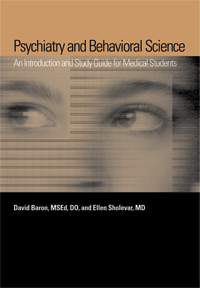

A clearly written, introductory psychiatric text guided by the current Institute of Medicine domains and including national board-style review questions
A clearly written, introductory psychiatric text guided by the current Institute of Medicine domains and including national board-style review questions


 A clearly written, introductory psychiatric text guided by the current Institute of Medicine domains and including national board-style review questions
A clearly written, introductory psychiatric text guided by the current Institute of Medicine domains and including national board-style review questions

|  |
Psychiatry and Behavioral ScienceAn Introduction and Study Guide for Medical Studentsedited by David A. Baron and Ellen H. Sholevarpaper EAN: 978-1-59213-531-8 (ISBN: 1592135315) |
"Psychiatry and Behavioral Science is a well crafted, simply written, comprehensive review of evidenced-based psychiatric theory and practice. Edited by two leaders in psychiatric education--one of whom, David Baron, is an internationally acclaimed psychopharmacologist--it provides not only medical students but also all health professionals regardless of subspecialty or years of experience a comprehensive review of the state of the art of psychiatry. The charts and references to critical recent contributions to the literature provided throughout the volume coupled with multiple-choice review exams at the end of each chapter make it particularly useful for preparation for board and recertification examinations. I recommend it to all both within the medical profession as well outside of it to read and enjoy."
—Andrew E. Slaby, MD, PhD, MPH,, Clinical Professor of Psychiatry, New York University and New York Medical College
This uniquely formatted text that combines introductory psychiatry content with board-style review questions has been written as a useful guide for first- and second-year medical students and other mental health professional students. Psychiatry and Behavioral Science is intended to be used as an indispensible text for pre-clinical psychiatric education. The user-friendly split page format includes clinical vignettes, “fast facts,” and relevant art work. Each chapter contains board review questions that prepare the medical student for the USMLE and COMLEX examinations. By using a clinical approach consistent with the needs of today’s medical and mental health profession students, the authors prepare these students for their exams and clinical rotations. The text is also designed to prepare international students for United States residency programs. Non-medical persons interested in learning more about the basics of psychiatry and behavioral and social factors affecting health will find this volume compelling.
Excerpt available at www.temple.edu/tempress
Preface
Section I: The Journey Of Life
1. The Early Years of Childhood
2. The Elementary School and Teenage Years
3. Young Adulthood
4. Middle Adulthood and Aging
5. Human Sexuality
Section II: Life's Vicissitudes
6. Stress and Coping
7. In Sickness and in Health
8. Substance-Related Disorders
9. Interpersonal Violence
10. Suicide
Section III: Healing and the Physician
11. The Medical Student and Physician
12. The Clinical Encounter
13. Major Psychiatric Disorders and Medicine
14. Social and Cultural Issues
15. Health Policy and Economics
About the Contributors
 | David A. Baron MSEd, DO, is Professor and Chair of the Department of Psychiatry and Behavioral Science at Temple University School of Medicine. |
Ellen H. Sholevar, MD, is Professor, Vice Chair for Education, and Chief of Child and Adolescent Psychiatry in the Department of Psychiatry and Behavioral Science at Temple University School of Medicine.
Psychology
Health and Health Policy
Education
© 2015 Temple University. All Rights Reserved. This page: http://www.temple.edu/tempress/titles/1869_reg.html.